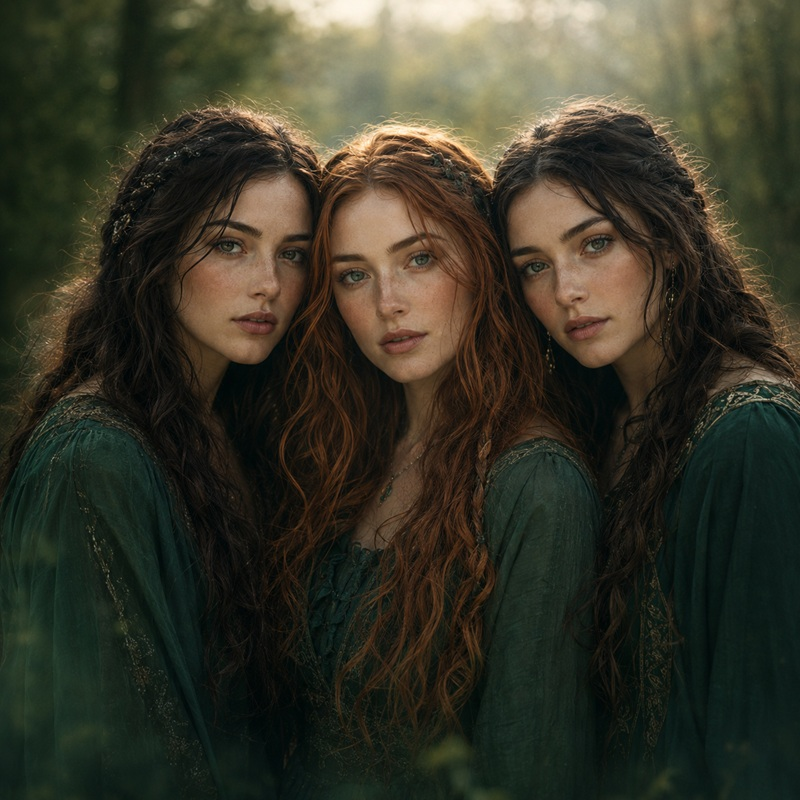
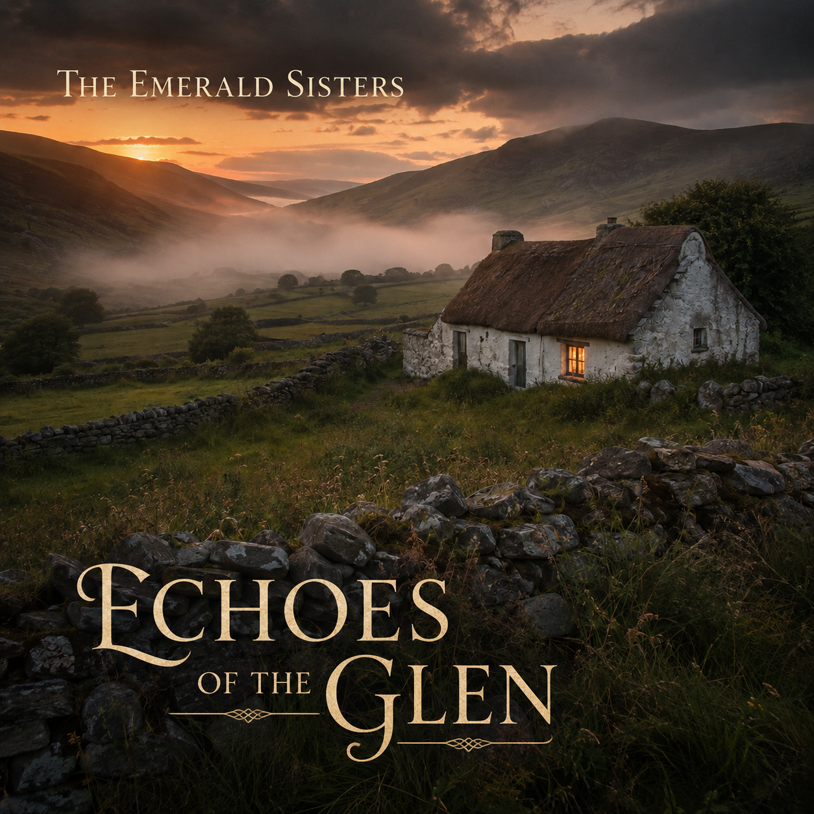

Three voices, one landscape
Music from somewhere older
The Emerald Sisters weave haunting harmonies through atmospheric Celtic folk, drawing inspiration from the glens, coasts and quiet firesides of Ireland.
Their songs live between memory and landscape, where family stories, distant horizons and the turning seasons still have a voice. Rich, intimate and timeless, this is music made to stay with you long after the final note fades.
The album
Echoes of the Glen
A journey through mist, memory and the old roads home.
Echoes of the Glen brings together sweeping folk arrangements, close vocal harmonies and stories rooted in the Irish landscape. Each song opens a small window onto a world of green hills, stone walls and lives remembered.
Enquire about the music
There are places the heart remembers, even when the road has long since disappeared.